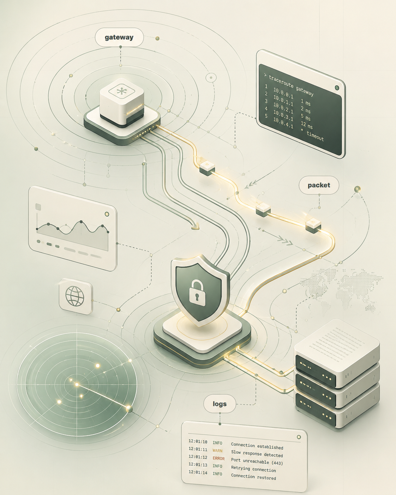

Networking
How devices talk, how packets move, how routes behave, and why small settings can change the whole connection.
Personal Cyber Space
This page is not a service page. It is a personal corner for networking, cybersecurity basics, lab thinking, packet flow, security notes, and the small technical ideas I keep coming back to.
Identity
Some pages sell. This one remembers. I keep what I am learning, what I want to test, what I broke, what I fixed, and what still feels interesting.
How devices talk, how packets move, how routes behave, and why small settings can change the whole connection.
Security as a way of thinking: reduce blind spots, understand risk, and keep systems cleaner than before.
Small experiments, screenshots, diagrams, writeups, mistakes, fixes, and personal observations from learning.

Signal Thinking
A slow website, a failed ping, a strange login, a blocked port, a missing DNS record: small signals can explain a lot when you learn how to read them.
Personal Lab
Draw how devices, router, DNS, firewall rules, and traffic flow connect together.
Keep notes from access logs, auth logs, blocked attempts, and normal traffic patterns.
Understand rules, allowed traffic, blocked traffic, and why default settings matter.
Record lookup behavior, nameservers, caching, records, and common DNS mistakes.
Why This Page Exists
Automation, local SEO, and web development can be work. Networking and cybersecurity can stay as the place where I learn slowly, think deeply, and build technical discipline.
Notebook
DNS lookup, connection setup, request, response, rendering: one simple action hides a full chain of systems.
Logs are memory. Without them, troubleshooting becomes guessing and security becomes mostly feeling.
A firewall is not just a wall. It is a decision point: what can pass, from where, to where, and why.
Learning Map